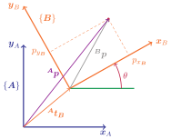

Clase 07 - Laboratorio
Transformaciones 2D y Pose 2D

Matriz de transformación homogénea
Sea un punto \({\boldsymbol{p}} = {\begin{pmatrix} a & b \end{pmatrix}}\) y su correspondiente homogéneo \({\boldsymbol{\tilde{p}}} = {\begin{pmatrix} a & b & 1 \end{pmatrix}}\), podemos representar una traslación y rotación 2D mediante una transformación homogénea:
\[ \textcolor{Blue}{{}^\boldsymbol{A}\boldsymbol{\tilde{p}}} = \textcolor{Blue}{{}^\boldsymbol{A}}\boldsymbol{T}_\textcolor{Orange}{\boldsymbol{B}} \textcolor{Orange}{{}^\boldsymbol{B}\boldsymbol{\tilde{p}}} = \begin{pmatrix} \textcolor{Maroon}{{}^\boldsymbol{A}\boldsymbol{R}_\boldsymbol{B}} & \textcolor{ForestGreen}{{}^\boldsymbol{A}\boldsymbol{t}_\boldsymbol{B}} \\ \boldsymbol{0} & 1 \end{pmatrix} {}^\boldsymbol{B}{\boldsymbol{\tilde{p}}} \]
\[ \begin{bmatrix} \textcolor{Blue}{p_{{x}_\boldsymbol{A}}} \\ \textcolor{Blue}{p_{{y}_\boldsymbol{A}}} \\ 1 \end{bmatrix} = {\begin{bmatrix} \cos{\textcolor{Maroon}{\theta}} & -\sin{\textcolor{Maroon}{\theta}} & \textcolor{ForestGreen}{{t_x}} \\ \sin{\textcolor{Maroon}{\theta}} & \cos{\textcolor{Maroon}{\theta}} & \textcolor{ForestGreen}{{t_y}} \\ 0 & 0 & 1 \end{bmatrix}} \begin{bmatrix} \textcolor{Orange}{p_{{x}_\boldsymbol{B}}} \\ \textcolor{Orange}{p_{{y}_\boldsymbol{B}}} \\ 1 \end{bmatrix} \]
Rotación 2D en cuaternion
Práctica de marcos de referencia y transformaciones
Escenario
- Un robot \(\textbf{A}\) se encuentra en la posición \((2,1)\) con orientación \(30^\circ\) en coordenadas del \(\textit{Mundo}\)
- Un robot \(\textbf{B}\) se encuentra en la posición \((0.5,\tfrac{\sqrt{3}}{2})\) con orientación \(60^\circ\) en el sistema de coordenadas del robot \(\textbf{A}\)
- Un obstáculo \({}^W \boldsymbol{O}_1 = (0, 3)\) en coordenadas del \(\textit{Mundo}\)
- Un obstáculo \({}^A \boldsymbol{O}_2 = (\sqrt{3}, -1)\) en coordenadas del robot \(\textbf{A}\)
1. Representar todos los robots y sus poses, y todos los sistemas de coordenadas que identifique
Puedes dibujarlos en una cuadrícula o utilizar variables en python
2. ¿Cuáles son las coordenadas del obstáculo \(\boldsymbol{O}_1\) en el sistema de coordenadas del robot \(\textbf{A}\)?
3. ¿Cuáles son las coordenadas del obstáculo \(\boldsymbol{O}_2\) en el sistema de coordenadas del robot \(\textbf{B}\)?
4. ¿Cuál es la pose del robot \(\textbf{B}\) en coordenadas del \(\textit{Mundo}\)?
Pruebe que realizar dos rotaciones consecutivas es lo mismo que realizar una rotación de los ángulos sumados.
Librería de transformaciones tf2
Publicar una transformación estática con
static_transform_publisher
$ ros2 run tf2_ros static_transform_publisher x=<x> y=<y> z=<z> roll=<roll> pitch=<pitch> yaw=<yaw> <marco_padre> <marco_hijo>
Ejemplo
$ ros2 run tf2_ros static_transform_publisher
x=5.0 y=3.0 yaw=3.141592 mundo mi_robotVer árbol de transformación
rqt_tf_tree
$ ros2 run rqt_tf_tree rqt_tf_treeSi el paquete no se encuentra instalado:
sudo apt install ros-jazzy-rqt-tf-treeObtener una transformación con
tf2_echo
$ ros2 run tf2_ros tf2_echo <marco_de_referencia> <marco_objetivo>
Ejemplo
$ ros2 run tf2_ros tf2_echo odom base_linkVisualizar las transformaciones con
rviz2
$ ros2 run rviz2 rviz2Publicar una transformación
Importar las librerías y objetos correspondientes
# Para publicar la transformación
from tf2_ros import TransformBroadcaster
# Para construir el mensaje de transformación
from geometry_msgs.msg import TransformStamped
# función auxiliar para convertir ángulos a cuaternion
from transforms3d.euler import euler2quatCrear el publicador
self.tf_broadcaster = TransformBroadcaster(self)Crear el mensaje de transformación
tf = TransformStamped()
tf.header.stamp = self.get_clock().now().to_msg()
tf.header.frame_id = '<marco_referencia>'
tf.child_frame_id = '<marco_objetivo>'
# Traslación
tf.transform.translation.x = t_x
tf.transform.translation.y = t_y
tf.transform.translation.z = t_z
# Rotación
q = euler2quat(roll, pitch, yaw) # Devuelve w x y z
tf.transform.rotation.x = q[1]
tf.transform.rotation.y = q[2]
tf.transform.rotation.z = q[3]
tf.transform.rotation.w = q[0]Enviar la transformación
self.tf_broadcaster.sendTransform(tf)Parte 2. Transformaciones estáticas y dinámicas
1. Crear un archivo launch que recree el escenario de la parte 1 utilizando el nodo static_transform_publisher
Publique la transformación de cada uno de los marcos de referencia y puntos de interés
El nodo
static_transform_publisherrecibe sus valores mediante argumentos, no parámetros. Por lo tanto utilizar el campoargumentsde la acciónNodedel launch
Node(
...
arguments=[
'--x', '<x>',
'--y', '<y>',
'--z', '<z>',
'--roll', '<yaw>',
'--pitch', '<yaw>',
'--yaw', '<yaw>',
'--frame-id', '<marco_referencia>',
'--child-frame-id', '<marco_objetivo>'
],
...
),Puede utilizar el paquete rqt_tf_tree o rviz2 para verificar el resultado
2. Mediante el comando ros2 run tf2_ros tf2_echo verifique los resultados obtenidos en la parte 1
3. Implementar un nodo que publique una transformación en movimiento
- Utilice como marco de referencia fijo aquel que haya utilizado como \(\textit{Mundo}\) en la parte 1, y utilice
robotCcomo nombre para el marco móvil - Generar las coordenadas \(x\) e \(y\) mediante las siguientes ecuaciones:
\[ \begin{align} x &= R \cdot \cos(t) \\ y &= R \cdot \sin(t) \end{align} \]
Puede crear un parámetro para configurar el radio \(R\) del círculo
- Para obtener el tiempo \(t\) puede utilizar la función
get_clock()del nodo:
seconds, nanoseconds = self.get_clock().now().seconds_nanoseconds()
t = (nanoseconds / 1E9 + seconds) * (np.pi / 2.0) # 1 vuelta cada 4 segundos- Puede utilizar una coordenada \(z = 0\) constante u otro valor aproximado
- Para calcular la orientación, se debe obtener el ángulo de la tangente a la trayectoria, para esto se podrá utilizar la función
arctan2denumpy:
yaw = np.arctan2(np.cos(t), -np.sin(t))Recuerde que en rotaciones 2D el cuaternion para rotar un ángulo \(\alpha\) puede definirse de la siguiente forma \[ \boldsymbol{q} = \begin{pmatrix} 0 & 0 & \sin{\tfrac{\alpha}{2}} & \cos{\tfrac{\alpha}{2}} \end{pmatrix}^T \]
- Publique las transformaciones a más de 30 [Hz] para ver una animación fluida
Puede crear un parámetro para configurar la frecuencia de actualización
- Modifique el
launchdel ejercicio anterior para añadir este nuevo nodo al escenario
Recuerde siempre completar las dependencias e instalarlas, configurar adecuadamente el archivo setup.py de instalación, compilar el workspace y configurar el entorno local